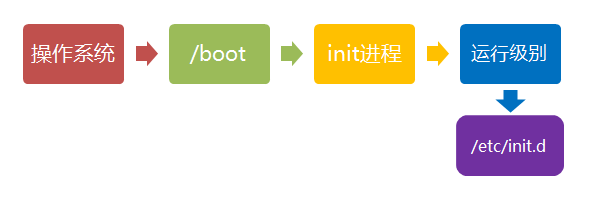

Linux 系统启动过程¶
很多时候我们启动Linux系统的时候，屏幕显示大量启动信息，给人一种很复杂的样子。实际上Linux的启动过程并不是想象中的那么复杂，Linux启动过程可以分为 5 个阶段：
- 内核的引导
- 运行 init
- 系统初始化
- 建立终端
- 用户登录系统
init程序的类型：SysV: init, Cent5 之前，配置文件：/etc/inittabUpstart: init, Cent6, 配置文件：/etc/inittab, /etc/init/*.confSystemd: systemd, Cent7, 配置文件：/usr/lib/systemd/system, /etc/systemd/system
1. 内核引导¶
当计算打开电源后，首先的时 BIOS 开机自检，按照 BIOS 中设置的启动设备（通常是硬盘）来启动，操作系统接管硬件之后，首先读入 /boot 目录下面的内核文件。

2. 运行 init¶
init 进程是系统所有进程的起点，没有这个进程，系统中的任何进程都不会被启动，init 程序首先需要读取配置文件 /etc/inittab

3. 运行级别¶
显示情况下很多程序需要开机启动，在 Windows 系统中称为**服务**(service)，在 Linux 系统中称之为**守护进程**(daemon)。
其中，init 的一大任务就是去运行这些开机启动的程序，但是不同的场景下需要启动不同的程序，比如作为 web 服务器时，需要启动 Nginx ，用作桌面程序时，则不需要这些程序。
Linux 系统允许为不同的场合，分配不同的开机启动程序，这就叫做**运行级别**(runlevel)，也就是说，Linux 系统开机时根据**运行级别**，确定需要运行那些程序。

Linux 系统有 7 个运行级别： - 运行级别0：系统停机状态，系统默认运行级别不能设为0，否则不能正常启动 - 运行级别1：单用户工作状态，root权限，用于系统维护，禁止远程登陆 - 运行级别2：多用户状态(没有NFS) - 运行级别3：完全的多用户状态(有NFS)，登陆后进入控制台命令行模式 - 运行级别4：系统未使用，保留 - 运行级别5：X11控制台，登陆后进入图形GUI模式 - 运行级别6：系统正常关闭并重启，默认运行级别不能设为6，否则不能正常启动
4. 系统初始化¶
在 init 的配置文件中：si::sysinit:/etc/rc.d/rc.sysinit 调用执行了 /etc/rc.d/rc.sysinit 而 rc.sysinit 是个 bash shell 的脚本，主要负责完成一些系统初始化的工作，rc.sysinit 是每一个运行级别都要首先运行的一个重要脚本。

5. 建立终端¶
rc 执行完毕后，返回 init。这时基本系统环境已经设置好了，各种守护进程也已经启动了。
init 接下来会打开 6 个终端，以便用户登录系统。在 inittab 中的以下 6 行就是定义了 6 个终端：
1:2345:respawn:/sbin/mingetty tty1
2:2345:respawn:/sbin/mingetty tty2
3:2345:respawn:/sbin/mingetty tty3
4:2345:respawn:/sbin/mingetty tty4
5:2345:respawn:/sbin/mingetty tty5
6:2345:respawn:/sbin/mingetty tty6
6. 用户登录系统¶
一般来说，用户的登录方式有三种： - 命令行登录 - ssh 登录 - 图形界面登录